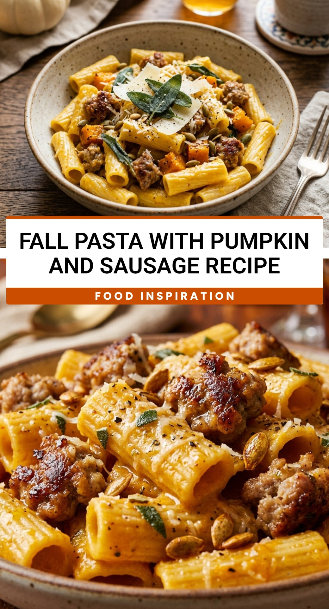

Fall Pasta With Pumpkin And Sausage Recipe
October 1, 2026

As the leaves turn gold and the air gets crisp, there is nothing quite like a warm bowl of comfort food to end the day. This Fall Pasta with Pumpkin and Sausage brings together the earthy sweetness of pumpkin and the savory, salty kick of Italian sausage for a meal that feels like a warm hug. It is the perfect weeknight dinner that captures the essence of autumn in every bite.
Recipe Information
Prep Time: 10 minutes
Cook Time: 20 minutes
Total Time: 30 minutes
Servings: 4 servings
Difficulty Level: Easy
Nutrition Information
Calories per serving: 545 kcal
Protein: 24g
Carbohydrates: 58g
Fat: 26g
Fiber: 6g
Sugar: 7g
Sodium: 890mg